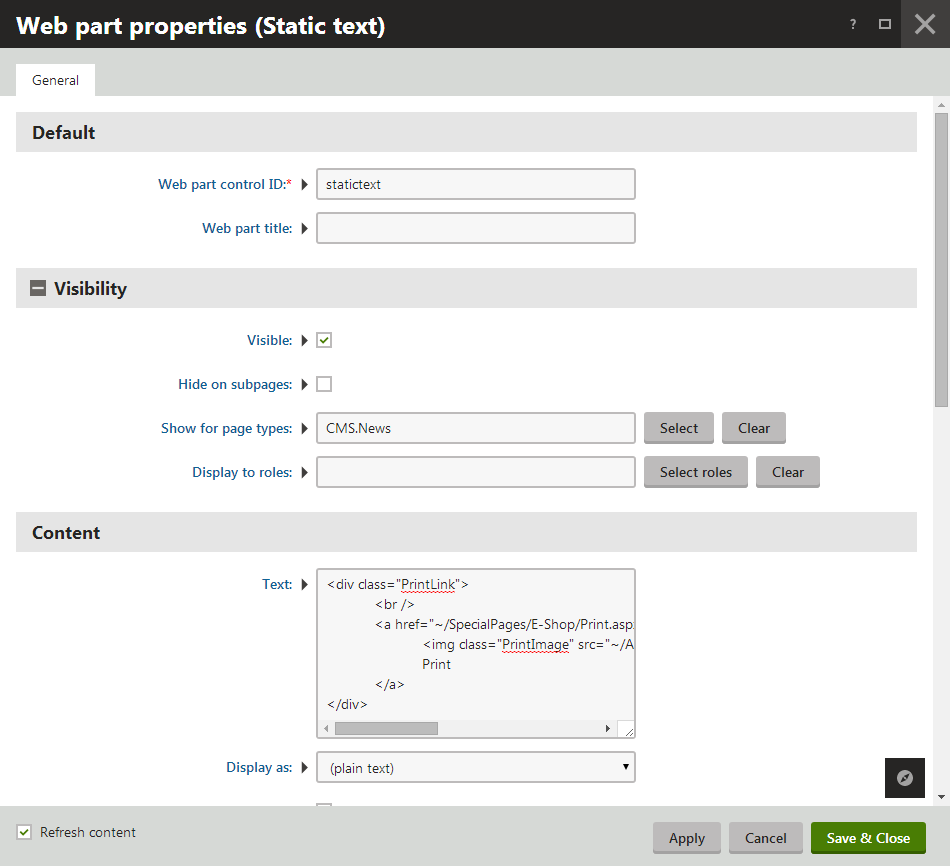
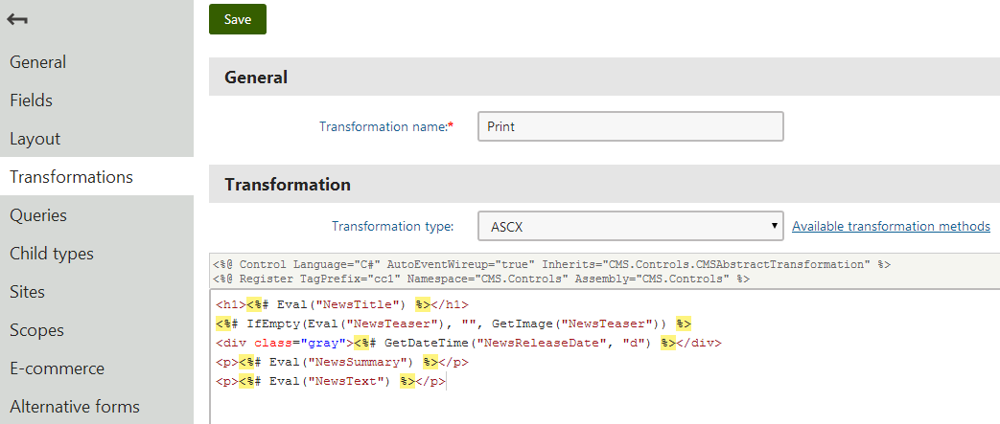

Creating printable versions of pages
Kentico allows you to add a link button to your pages that creates a print version of the given page.
Note: The approach described here only allows printing of structured content of an individual page (i.e., the content of the page fields).
Creating a Print button
The following example shows how to create a print button for the news section on the sample Corporate Site.
Open the Pages application.
Select the News page in the content tree.
Switch to the Design tab.
Add the Static text web part into the Main zone.
Configure the web part properties:
Web part control ID: PrintLink
Show for page types: CMS.News
Text:
<divclass="PrintLink"><br /><a href="~/SpecialPages/E-Shop/Print.aspx?printpath={%NodeAliasPath%}&classname={%ClassName%}"target="_blank"><imgclass="PrintImage"src="~/App_Themes/CorporateSite/Images/Print.gif"alt="Print"/>Print</a></div>

Configuring the static text web part to display a print link
Save & Close.
Create a print transformation for the News page type:
Open the Page types application.
Edit (
 ) the News page type.
) the News page type.Switch to the Transformation tab.
Click New Transformation.
Type Print as the Transformation name and copy the following content into the code editor.
<h1><%# Eval("NewsTitle") %></h1><%# IfEmpty(Eval("NewsTeaser"),"", GetImage("NewsTeaser")) %><divclass="gray"><%# GetDateTime("NewsReleaseDate","d") %></div><p><%# Eval("NewsSummary") %></p><p><%# Eval("NewsText") %></p>Click Save.

Creating the Print transformation for News pages
You can now open the live version of the Corporate site and select a news article in the News section. The page contains the Print button, which opens and displays the print version of the given article (using the Corporate site's default Print page and the created transformation).
Creating the Print page on your site
The Print page used in the previous example is already included as part of the sample Corporate Site. On your own website, you need to create the Print page yourself:
Open your site in the Pages application.
Add a new Page (menu item) page (outside of the site's standard navigation).
Name the page Print and use the Create a blank page option when selecting the page template.
Disable page nesting in Properties -> Template.
Return to the Design tab.
Add the Repeater web part to render the Print transformation.
Set the following properties for the Repeater web part:
Path: {? printpath|(default)/% ?}
Page types: {? classname|(default)cms.root ?}
Transformation: {? classname|(default)cms.root ?}.print
The values are macro expressions that dynamically load data from the URL query string parameters in the print link (printpath and classname). The macros also provide default values that the web part uses if no values are supplied in the URL (for example if you navigate directly to the Print page without a print button link).
Click OK.
Add the path to your print page into the print links that you use on your website.